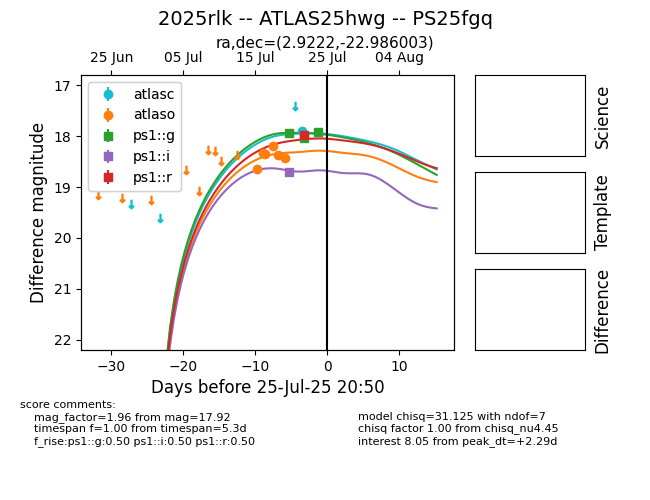

Target 2025rlk at 2025-07-25 20:50, see:
TNS: wis-tns.org/object/2025rlk
YSE: ziggy.ucolick.org/yse/transient_detail/2025rlk
alt names
2025rlk (yse,tns)
ATLAS25hwg (atlas)
PS25fgq (panstarrs)
coordinates:
equatorial (ra, dec) = (2.9222,-22.98600)
galactic (l, b) = (55.4720,-80.09550)
photometry
last atlasc=17.90, atlaso=18.42, ps1::g=17.92, ps1::i=18.70, ps1::r=17.99
1 atlasc, 6 atlaso, 3 ps1::g, 1 ps1::i, 1 ps1::r detections
